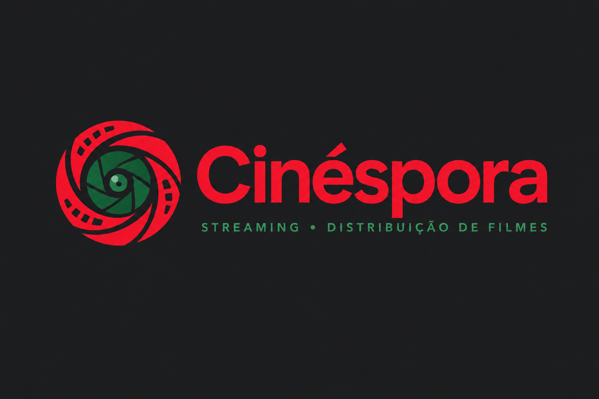

VÍDEO01 — 06
Adicione seu arquivo em video/video.mp4.
Uma ideia em movimento
Apresentação em vídeo
DESENVOLVEDOR / PORTFÓLIO PESSOAL
Gabriel Mariano Dourado
Desenvolvedor Soluções digitais & dados
Desenvolvimento com intenção.
Dados que ajudam a avançar.
Desenvolvo funções digitais e soluções orientadas por dados, com foco em performance, usabilidade e resultados. Explore meus projetos e conheça um pouco mais do meu trabalho com desenvolvimento e análise de dados.
GABRIEL MARIANO DOURADO — DESENVOLVEDORUM OLHAR SOBRE O PROCESSO
Uma seleção de ideias, experiências e estudos. Cada espaço está pronto para receber um novo projeto.
Adicione seu arquivo em video/video.mp4.
Apresentação em vídeo
Áudio de apresentação
Adicione seu arquivo em audio/audio.mp3.

Imagem de destaque
Logotipo carregado com sucesso.

Infográfico
Infográfico carregado com sucesso.
Adicione seu arquivo em animacao/animacao.mp4.
Animação / motion design
Adicione sua produção em musica/musica.mp3.